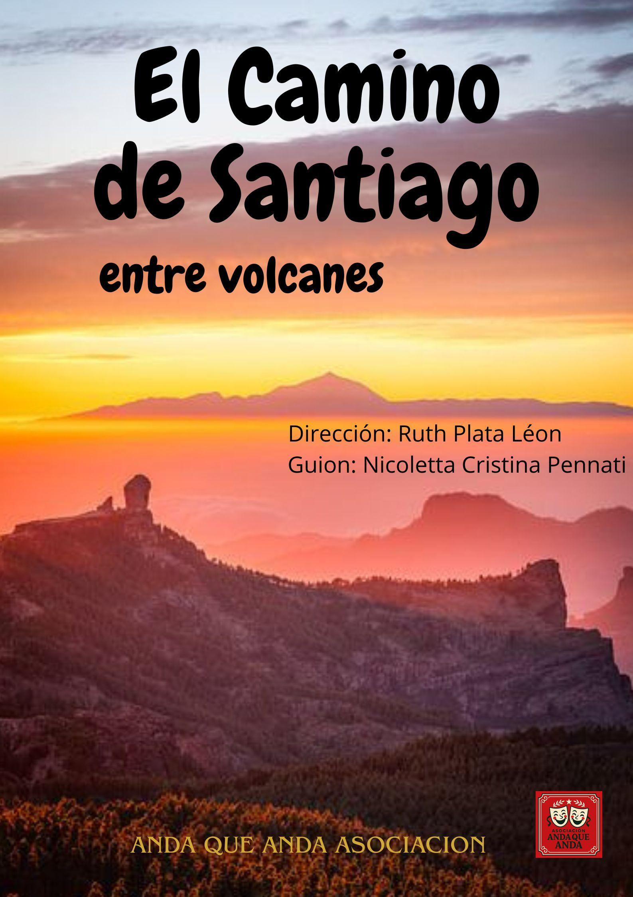
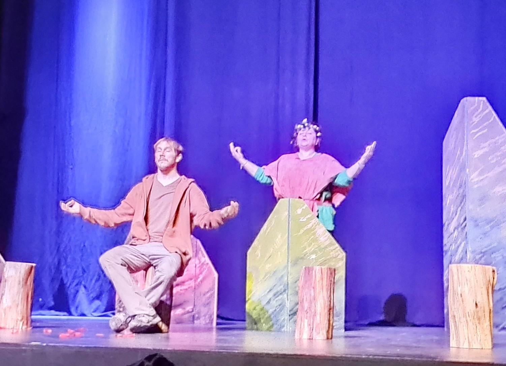
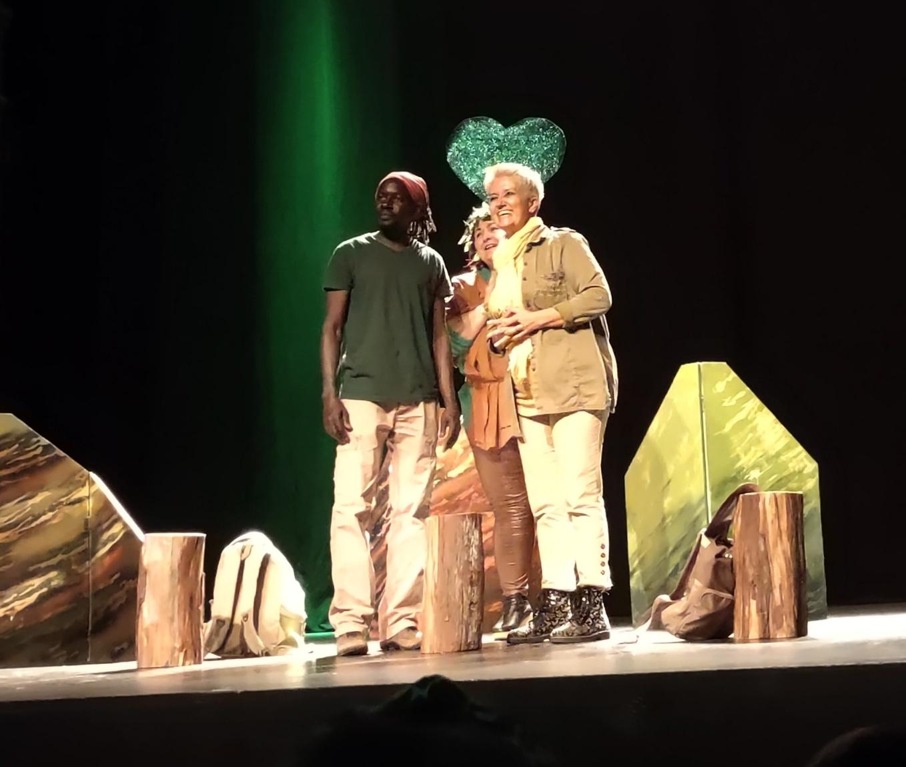
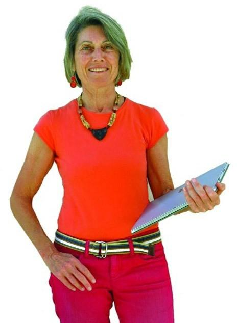

El Camino de Santiago entre volcanes

Dirección: Ruth Plata Léon
Guion: Nicoletta Cristina Pennati
ANDA QUE ANDA ASOCIACION
Introducción
Caminar no es simplemente poner un pie delante del otro; es una conversación silenciosa entre la tierra que pisamos y las almas de nuestros ancestros que aún la habitan. En El Camino de Santiago entre volcanes, la ruta que une las dunas de Maspalomas con el templo matriz y arciprestal de Santiago de Los Caballeros de Gáldar no se mide en kilómetros, sino en latidos.
Aquí, donde el basalto guarda el calor de los siglos, un grupo de seis caminantes se aventura no solo a cruzar barrancos y cumbres, sino a atravesar sus propios miedos. Entre el aroma de las tabaibas y la sombra de los pinos, el estrés de la ciudad se disuelve para dar paso a las preguntas que siempre evitamos: ¿Quiénes somos cuando nos quedamos a solas con nuestra respiración? ¿Qué buscamos realmente cuando miramos al horizonte?
Bajo la mirada atenta de una Diosa que es raíz y es viento, estos viajeros descubrirán que el Camino de la Plata es un espejo. Unos buscan salud, otros buscan fe, y algunos, sin saberlo, buscan el valor para volver a amar. En este trayecto, los antiguos rituales aborígenes se entrelazan con la promesa del apóstol, recordándonos que somos "arquitectos de nuestra propia vida".
El texto es moderno, cautivador y habla de temas siempre actuales como la amistad, la enfermedad, la identidad sexual, el amor, la espiritualidad. Una comedia que invita el público a reflexionar a la par lo que entretiene.
Porque el Camino es una metáfora de la vida, por lo que cada espectador se lo llevará a casa en su corazón.
Bienvenidos a una travesía de luz, sal y ceniza. Bienvenidos al Camino donde, al buscar la senda, terminas encontrándote a ti mismo.
Características de la obra
"El Camino de Santiago entre volcanes", es una obra teatral de carácter espiritual, pedagógico y costumbrista que utiliza el senderismo en Gran Canaria como motor de transformación para sus personajes.
1. Temática y Dualidad Cultural
El guion fusiona dos mundos que conviven en la identidad canaria:
- Misticismo Aborigen: La obra abre con cantos en lengua guanche dirigidos a Magec (el sol). La presencia de la Diosa actúa como un puente entre el pasado prehispánico y el presente.
- Tradición Cristiana: Se estructura en torno al Camino de Santiago canario (Maspalomas - Gáldar), mencionando hitos como la Iglesia de Tunte y la imagen de Santiago el Chico.
- Crecimiento Personal: El "Camino" se presenta explícitamente como una metáfora de la vida. Los personajes buscan respuestas al vacío existencial, el estrés laboral, el miedo al compromiso o la superación de enfermedades.

2. Estructura y Ritmo
- División por Etapas: La narrativa no se divide solo por escenas convencionales, sino por las etapas reales del camino (Maspalomas-Arteara, Arteara-Fataga, Fataga-Tunte, Tunte-Cruz de Tejeda, Cruz de Tejeda-Saucillo, Saucillo-Gáldar). Esto da una sensación de progresión física y emocional.
- La Diosa como Narradora Omnisciente: El personaje de la Diosa rompe la "cuarta pared". Actúa como guía, da datos técnicos de los kilómetros a recorrer, comenta los sentimientos internos de los personajes (que ellos mismos a veces callan) y aporta el contexto histórico/legendario.
- Interactuaciones con el público: Es un formato de teatro interactivo con diferentes momentos divertidos y sorprendentes.
3. Personajes
El grupo de caminantes representa un microcosmos de la sociedad actual:
- Juan: El guía espiritual del grupo. Superviviente de cáncer, aporta una visión optimista y conectada con la naturaleza (abraza árboles, camina descalzo).
- Felipe y María: Representan la amistad con tensión sexual no resuelta. Felipe es inseguro y busca su identidad; María es pragmática pero emocionalmente cautelosa.
- Carmen y Roberta: Aportan el contrapunto dinámico. Carmen es independiente y decidida, mientras que Roberta actúa como la voz de la razón (y los celos amistosos).
- Alex: El buscador de paz, vegetariano y meditador, que representa la desconexión con el mundo material de los "hoteles de lujo".
4. Lenguaje y Estilo
- Localismo Canario: El lenguaje es auténtico y cercano, utilizando términos como guaguas, pa'lante, tías, bienmesabe, tabaibas y tuneras.
- Didactismo: El guion funciona casi como una guía cultural. Enseña sobre la Necrópolis de Arteara, la Caldera de Tejeda, el Roque Nublo y leyendas marineras.
5. Escenografía
Elementos escénicos mínimos como: troncos y estructuras geométricas tridimensionales en madera, pintadas con colores naturales, por el artista canario Daniel Rodríguez Báez. Objetivo: crear un bosque mágico. Sin olvidar el gran mapa de la isla con dibujadas las seis etapas, desde Maspalomas hasta Gáldar y, sobre todo, las imágenes de los espléndidos paisajes, proyectadas en la pantalla gigante, las que permiten a los espectadores sumergirse en las atmósferas naturales y ancestrales del Camino canario entre volcanes.
6. Música
Motivos canarios y canciones pop con momentos de baile.

La autora
Nicoletta Cristina Pennati, nacida en Milán (Italia), reside en Las Palmas de Gran Canaria. Licenciada en Ciencias Políticas, se convirtió en periodista profesional en 1981. Pasó los últimos veinte años de su carrera trabajando para el semanario Io donna del Corriere della Sera, el principal diario de Italia. Tiene un máster en NLP. Ha escrito cuatro libros, entre ellos el best seller Prevenir el cáncer comiendo con gusto, varios guiones teatrales, entre ellos: ¡Buen Camino! El Camino de Santiago entre volcanes, La librería de las Almas y La Confraternidad de la Sardina, que se está preparando. Ha participado como voluntaria en el proyecto Teatro en la cárcel en el Centro Penitenciario Salto del Negro de Las Palmas con la Asociación Hestia. Ha ideado el Proyecto TeHospiCan, Teatro en los Hospitales de Canarias con lo cual, por primera vez el teatro aficionado entra con regularidad, en los 14 hospitales públicos de las islas Canarias; el Proyecto TeTera (TeatroTerapia), desarrollado en los 4 distritos de Las Palmas de Gran Canaria y en San Nicolás de Tolentino en la Aldea gracias a la colaboración con las respectivas concejalías de Servicios Sociales de los dos Ayuntamientos. En fin, está desarrollando el Proyecto Todos somos Uno (teatro inclusivo) con actores con diferentes discapacidades.
Forma parte del grupo de escritores de "Canaria escribe teatro".

La directora
Ruth Plata León, nacida en Las Palmas de Gran Canaria, vive en Santa Brigida. Se inició como locutora de radio lo que la llevó a formarse como actriz de doblaje, poniendo voz a documentales, anuncios y presentaciones.
Ha estudiado interpretación con Victoria Teijeiro, Fernando Soto y ha participado en numerosos cursos de interpretación ante cámara con profesionales del sector. Ha actuado en varios cortometrajes de producción canaria y en obras de teatro. La última por la dirección de Rosa Escrig: "Polígono" (Premio Replica para el mejor espectáculo 2025), "Con siete estrellas verdes" y en piezas de micro teatro.
Actual formación de dirección teatral en Madrid en diversos cursos intensivos; docente en arte escénica, master en teatro terapia; ayudante de dirección Compañía Intellectus et Anima. Responsable de la parte artística de la Asociación Anda que Anda y del Proyecto TeTera, TeatroTerapia en los cuatro distritos del Ayuntamiento de Las Palmas y en San Nicolás de Tolentino en la Aldea; directora de la compañía Antígona de la Once.
Ficha técnica y reparto
Género: Comedia
Guion: Nicoletta Cristina Pennati
Directora: Ruth Plata Leon
Duración: 60 minutos
Reparto: Aitor Agero, Encarna Alemán, Jorge Coello, Angela De Prisco, Ana De Vega Gomez, Belinda Hernández García, Maryna Mezhuyeva Mezhuyeva, Ahmed Diop Wade, Jordán Hair Castro, Antonia Martín Soler, Borja Miranda Cano, Marco Siebel Hernita, José Luis Palomo
Escenografía: Daniel Rodríguez Báez
Dibujo: Libertad Reyes Torollo
Gráfica: Nicoletta Cristina Pennati
Fotografía: Franco Cappellari, Piergiorgio Pallara, Nicoletta Cristina Pennati
Técnico luces y música: Anchor Machín Loyzance
Promoción y Organización: Nicoletta Cristina Pennati, móvil 666133377, nicoletta.cristina.pennati@gmail.com
Asociación artística socio cultural Anda que Anda, calle La Naval 15, 35008 Las Palmas de Gran Canaria, andaqueandaasociacion@gmail.com